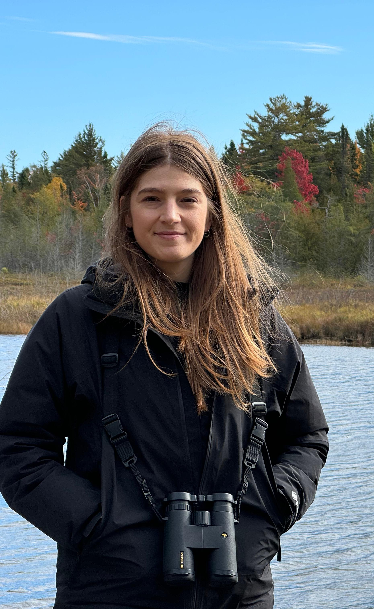

Sonia Illanas
Mi trabajo se centra en el análisis de datos ecológicos para la inferencia de patrones de distribución y abundancia de la fauna silvestre a gran escala. Particularmente estoy interesada en cómo distintas decisiones analíticas afectan a las inferencias que realizamos y en el desarrollo e implementacion de métodos cuantitativos que mejoren la fiabilidad de las estimas para la monitorización de la biodiversidad. Utilizo principalmente R para la realización de estos análisis y la generación de código reproducible que pueda ser útil para otros usuarios.
- Doctorado en Ciencias Agrarias y Ambientales. Universidad de Castilla-La Mancha (UCLM). 2021-2026.
- Máster en Ecología. Universidad Autónoma de Madrid y Universidad Complutense de Madrid (UAM-UCM). 2016-2018.
- Grado en Ingeniería del Medio Natural. Universidad Politécnica de Madrid (UPM). 2011-2016.
Experiencias Profesionales y Académicas
Cuando acabé el grado en Ingeniería del Medio Natural trabajé unos meses en la Universidad Politécnica de Madrid (UPM) bajo la dirección de Prof. Santiago Saura and Dr. Carlos Ciudad en el proyecto GEFOUR, relacionado con el uso de modelos de distribución de especies (SDMs) para el oso pardo cantábrico.
Mientras realizaba el Máster en Ecología tuve la oportunidad de realizar unas prácticas en WWF-España, tras las cuales estuve trabajando con ellos en varios proyectos relacionados con el estado de conservación favorable del lince ibérico, y el conejo de monte.
Durante un año estuve trabajando en INECO en temas relacionados con el manejo de BBDD de animales silvestres y la visualización de la información para la evaluación del impacto ambiental del proyecto High Speed 2.
Acabo de finalizar mi tesis doctoral en el IREC, CSIC-UCLM-JCCM, bajo el programa de ciencias Agrarias y Ambientales de la universidad de Castilla-La Mancha (UCLM). Mi tesis doctoral ha sido financiada por el Ministerio de Ciencia e Innovación bajo un contrato FPI, y dirigida por Dr. Pelayo Acevedo y Prof. Joaquín Vicente. En mi tesis doctoral he utilizado estadísticos cinegéticos y cámaras de fototrampeo para estudiar la distribución y abundancia de los mamíferos silvestres a lo largo de España y Europa. A través del proyecto ENETWILD, he colaborado con socios del ámbito académico, gubernamental y de la gestión de fauna silvestre para recopilar y armonizar información sobre fauna silvestre de diversos países de Europa.
¿Y en el tiempo libre?
Me encanta nadar, aunque disfruto con cualquier deporte. Tras un largo paréntesis retomé mi pasión por el agua y ha sido la mejor decisión que he tomado mientras hacía la tesis.
Nadar me ha enseñado muchas cosas y creo que tiene una gran conexión con la ciencia: disciplina, trabajo, sacrificio y esfuerzo. Intentarlo una y otra vez sin rendirse: perseverancia y tenacidad. Aprender que la frustración es una nueva oportunidad para hacerlo mejor la siguiente vez.
“… la vida se trata de solventar problemas, de mejorar y progresar, ya sabes, siempre puedes poner una excusa por cualquier razón…”. Gracias Eddie por enseñarme tanto.
Si de verdad quieres algo, encontrarás una forma de hacerlo. Happy coding! :)